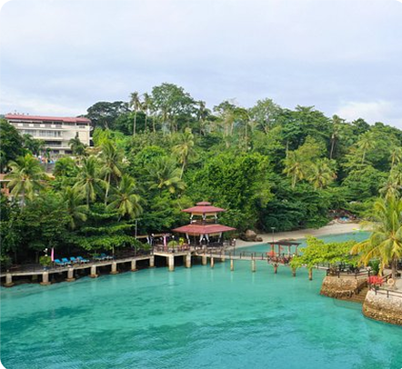
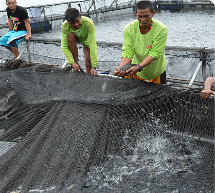
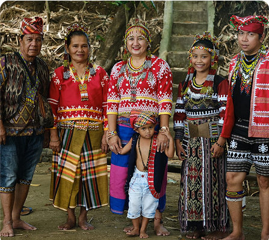
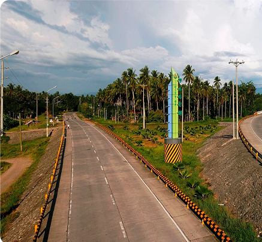

MUNICIPALITY OF CARMEN
Carmen, a strategic municipality in Davao del Norte, is known for its fertile farmlands, thriving agribusiness sector, and rapidly growing commercial district. Located along the Pan-Philippine Highway, it serves as a key transit point between Davao City and other towns in the province. With its strong economy based on rice, banana, and aquaculture, Carmen continues to balance rural charm with economic development.

Geography & Area
A Land of Plains, Rivers, and Coastal Waters
Carmen covers 183 square kilometers, featuring flatlands, coastal areas, and river systems that make it ideal for farming, fisheries, and trade. The Libuganon River, which runs through the town, plays a vital role in irrigation and aquaculture, supporting Carmen’s strong agricultural economy.

Brief History
From a Small Settlement to an Economic Powerhouse
Carmen started as a small riverside community, where indigenous Manobo and Mandaya tribes thrived alongside early Visayan settlers. Over time, migrant farmers and traders helped develop the town’s rice, banana, and aquaculture industries. Today, Carmen stands as a fast-growing municipality, known for its economic stability and agricultural contributions to the province.

Demographics & Language
A Multicultural and Entrepreneurial Community
Carmen is home to a diverse mix of Cebuano (Bisaya) speakers, Manobo and Mandaya indigenous groups, and migrant settlers from Luzon and the Visayas. Tagalog and English are widely spoken in business, education, and local government, ensuring smooth communication for visitors and investors.

Climate & Environment
A Productive Land with Well-Managed Resources
Carmen experiences a tropical monsoon climate, with consistent rainfall that supports its agricultural lands and fisheries. Environmental programs focus on river conservation, mangrove reforestation, and sustainable farming practices, ensuring the long-term health of the town’s natural resources.
Reference: davaodelnorte-carmen